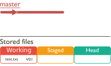
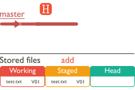
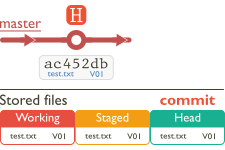
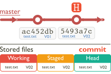
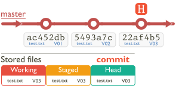

2.5.1
A project to explain the reset
The easiest type of reset to understand is the hard reset; it resets a project back to an earlier commit and replaces all the files in the working directory with the files that were present at the time of the specified commit.
To explain this let’s consider a simple project with just one file (test.txt). I will go through modifying the file and creating commits in a step-by-step way do demonstrate exactly what happens with a reset.
Let’s assume we have a new project and we’ve just created a new file called test.txt. This file is present in the working area only, we haven’t added or committed the file yet (step 1). Next add the file to the staging area (step 2) and then commit it to the local repository (step 3):
| Action | Result | |
|---|---|---|
| Step 1 |  | |
| In a new repository create the file test.txt and add some text to it. This is now in the working area and is version V01 of the file. | ||
| Step 2 |  | |
| Add the file to put it in the staging area. | ||
| Step 3 |  | |
| Now commit the file to the local repository. | ||
This gives our first commit [ac452db].
Now let’s modify the test.txt file (making it V02) and repeat the add and commit process to give our second commit [5493a7c] (step 4).
| Action | Result | |
|---|---|---|
| Step 4 |  | |
|
Modify text.txt. It is now V02. Now add and commit the file to the local repository. |
||
Now we do it all again for a third commit [22af5b5] and a file at V03 (step 5).
| Action | Result | |
|---|---|---|
| Step 5 |  | |
|
Modify text.txt again. It is now V03. Now add and commit the file to the local repository to give 3 commits in total. |
||
- Some of you may be wondering why I show files in the staged area after a commit, when in Figure 2.7 to Figure 2.10 I showed it as empty. In practice, the staged area does still hold the files (I showed it as empty to make the explanation easier to understand).
The staged area always holds the files, but if they are the same as the committed files, Git considers it to be empty—it isn’t, but there is nothing in there that requires action.
Finally, let’s modify the working copy of test.txt (making it V04) and add it to the staging area (step 6). Do not commit these changes; this is work in progress and I will use it to show how the different types of reset work. We have this as the final step:
| Action | Result | |
|---|---|---|
| Step 6 |

|
|
|
Modify text.txt again. It is now V04. Now add and commit the file to the staged area. |
||
I’ve show the modified and staged file version in red.
Now let’s look at what a reset does.
| Reset—a reassuring point |
|---|
The reset process can be destructive; it can overwrite data (it’s one of the few things that Git does that can lose your data). That said: |
|
A reset will never change or delete committed data. Committed data is always safe, a commit point will never be deleted and you can always go back to it. The worst a reset can do is overwrite changes in working or staged files. |
I will start with a hard reset; like a hard Brexit, it’s the option that makes most sense.

{kind=link}
{kind=link}
{kind=link}
{kind=link}
{kind=link}
{kind=link}
{kind=link}
{kind=link}
{kind=link}
{kind=link}
{kind=link}
{kind=link}
{kind=link}
{kind=link}
{kind=link}
{kind=link}